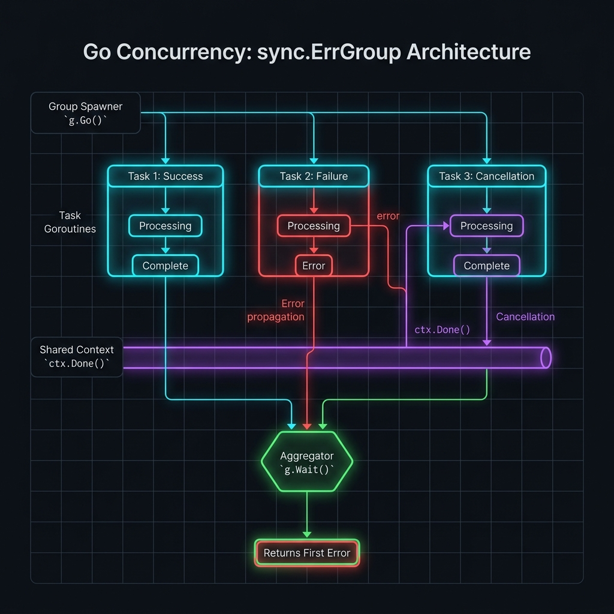

ErrorGroup — Xử lý lỗi đồng thời phối hợp
Sử dụng golang.org/x/sync/errgroup để quản lý một nhóm goroutine với cơ chế xử lý lỗi tập trung, hủy ngữ cảnh tự động, và giới hạn đồng thời — từ cơ bản đến cấp độ expert.
errgroup không nằm trong thư viện chuẩn của Go. Bạn cần cài đặt từ golang.org/x/sync:
go get golang.org/x/sync
Khái niệm & Định nghĩa
ErrorGroup (errgroup.Group) là một primitive đồng thời trong Go cho phép chạy nhiều goroutine song song, thu thập lỗi từ chúng và — khi kết hợp với context — tự động hủy tất cả goroutine còn lại khi có một goroutine thất bại.
Trước khi có errgroup, lập trình viên phải tự quản lý sync.WaitGroup + channel lỗi + context.CancelFunc — một combo phức tạp và dễ gây bug. errgroup đóng gói toàn bộ pattern này.
Concurrency Primitives
Bao gồm sync.WaitGroup bên trong để theo dõi số lượng goroutine đang chạy.
First-Error Semantics
Chỉ lưu lỗi đầu tiên xảy ra. Các goroutine tiếp theo lỗi sẽ bị bỏ qua (dùng sync.Once nội bộ).
Context Propagation
Khi dùng WithContext, errgroup tự gọi cancel() ngay khi goroutine đầu tiên trả về lỗi.
Concurrency Limiting
Từ Go 1.21, SetLimit(n) cho phép giới hạn số goroutine chạy đồng thời, tương tự semaphore.
Vấn đề ErrorGroup giải quyết
Xét bài toán: gọi 5 API song song, nếu bất kỳ API nào lỗi thì hủy toàn bộ. Với cách truyền thống:
// ❌ Cách tiếp cận truyền thống: verbose và error-prone func fetchAllTraditional(ctx context.Context, urls []string) ([]string, error) { ctx, cancel := context.WithCancel(ctx) defer cancel() // phải nhớ gọi! var wg sync.WaitGroup results := make([]string, len(urls)) errCh := make(chan error, len(urls)) // buffered để tránh goroutine leak! for i, url := range urls { i, url := i, url // capture loop variables wg.Add(1) go func() { defer wg.Done() result, err := fetch(ctx, url) if err != nil { errCh <- err cancel() // phải tự gọi cancel return } results[i] = result // race condition nếu quên mutex! }() } wg.Wait() close(errCh) if err := <-errCh; err != nil { return nil, err } return results, nil }
func fetchAllErrGroup(ctx context.Context, urls []string) ([]string, error) { g, ctx := errgroup.WithContext(ctx) // tự động tạo cancel results := make([]string, len(urls)) for i, url := range urls { i, url := i, url g.Go(func() error { result, err := fetch(ctx, url) if err != nil { return err // errgroup tự gọi cancel() } results[i] = result // safe: mỗi goroutine viết index riêng return nil }) } if err := g.Wait(); err != nil { return nil, err } return results, nil }
Kiến trúc tổng quan

Sơ đồ sau minh họa cách errgroup.Group phối hợp các goroutine, xử lý lỗi và quản lý context hủy:
Luồng hoạt động chi tiết
Khởi tạo Group
Gọi errgroup.WithContext(ctx) để tạo một *Group mới kèm theo một context dẫn xuất. Context này có một hàm cancel() được lưu nội bộ trong Group.
Đăng ký và chạy goroutine
Mỗi lần gọi g.Go(func() error), Group tăng counter của WaitGroup lên 1 và khởi chạy goroutine bao gói hàm của bạn.
Xử lý lỗi tập trung
Khi goroutine trả về lỗi khác nil, sync.Once đảm bảo chỉ lỗi đầu tiên được lưu vào Group.err. Đồng thời, cancel() được gọi để hủy context.
Propagation & Cancellation
Tất cả goroutine đang chạy nhận được tín hiệu hủy qua ctx.Done(). Các goroutine cần tự kiểm tra và dừng lại — errgroup không kill goroutine theo cách thức bắt buộc.
Chờ và trả về
g.Wait() block cho đến khi tất cả goroutine đã được đăng ký trả về. Sau đó trả về lỗi đầu tiên (hoặc nil nếu không có lỗi). Nội bộ, cancel() cũng được gọi trong Wait().
Cơ bản — Basic Usage
Ví dụ 1: Sử dụng đơn giản nhất
package main import ( "context" "fmt" "golang.org/x/sync/errgroup" ) func main() { g := &errgroup.Group{} // hoặc new(errgroup.Group) for i := 0; i < 5; i++ { i := i // Go < 1.22: phải capture biến loop g.Go(func() error { if i == 3 { return fmt.Errorf("worker %d: something went wrong", i) } fmt.Printf("worker %d: done\n", i) return nil }) } // Wait block cho đến khi tất cả goroutine kết thúc if err := g.Wait(); err != nil { fmt.Println("Error:", err) } } // Output: // worker 0: done // worker 1: done // worker 2: done // worker 4: done // Error: worker 3: something went wrong
i không còn bị chia sẻ giữa các iteration, nên i := i không còn cần thiết. Tuy nhiên, để tương thích ngược và code rõ ràng, nhiều team vẫn giữ convention này.
Ví dụ 2: Kết hợp WithContext
func fetchMultiple(ctx context.Context, urls []string) ([]string, error) { // ctx mới sẽ bị hủy khi: (1) một goroutine lỗi, (2) g.Wait() trả về g, ctx := errgroup.WithContext(ctx) results := make([]string, len(urls)) for i, url := range urls { i, url := i, url g.Go(func() error { // Dùng ctx để request có thể bị cancel req, err := http.NewRequestWithContext(ctx, "GET", url, nil) if err != nil { return fmt.Errorf("create request %s: %w", url, err) } resp, err := http.DefaultClient.Do(req) if err != nil { // Nếu ctx đã bị cancel, lỗi này sẽ chứa context.Canceled return fmt.Errorf("fetch %s: %w", url, err) } defer resp.Body.Close() results[i] = fmt.Sprintf("%s → %d", url, resp.StatusCode) return nil }) } // Wait cũng gọi cancel() sau khi tất cả goroutine kết thúc return results, g.Wait() }
API & Methods đầy đủ
Tạo một Group mới kèm theo một context dẫn xuất từ ctx. Context trả về sẽ bị hủy khi bất kỳ hàm nào truyền vào Go trả về lỗi khác nil, hoặc khi Wait trả về — tùy cái nào đến trước.
⚠️ Context trả về từ WithContext KHÔNG nên truyền ra ngoài phạm vi errgroup — nó sẽ bị hủy sớm hơn bạn mong đợi.
Gọi hàm f trong một goroutine mới được quản lý bởi Group. g.Go được thiết kế để gọi nhiều lần trước khi g.Wait(). Goroutine được khởi chạy ngay lập tức; nếu SetLimit đã được đặt, Go sẽ block cho đến khi có slot rảnh.
📌 Hàm f phải tương thích với context cancellation để errgroup hoạt động hiệu quả.
Block cho đến khi tất cả goroutine đã được đăng ký qua Go trả về, sau đó gọi cancel() (nếu dùng WithContext). Trả về lỗi đầu tiên khác nil mà một goroutine trả về, hoặc nil nếu tất cả thành công.
✅ An toàn khi gọi Wait() ngay cả khi chưa có goroutine nào được đăng ký — nó trả về nil ngay lập tức.
Giới hạn số goroutine chạy đồng thời tối đa là n. Một lời gọi Go khi đã đạt giới hạn sẽ block cho đến khi có goroutine khác hoàn thành. Giá trị âm nghĩa là không giới hạn (mặc định). Phải được gọi trước bất kỳ lần gọi Go() nào.
🆕 Có từ Go 1.21. Thay thế cách dùng semaphore thủ công.
Thử khởi chạy hàm f trong goroutine mới. Nếu số goroutine đang chạy đã đạt SetLimit, TryGo trả về false ngay lập tức mà không block. Nếu thành công, trả về true và goroutine được khởi chạy.
💡 Hữu ích khi muốn non-blocking dispatch — ví dụ: load balancing, rate limiting tùy chỉnh.
g.Go(f) — luôn đăng ký goroutine, block nếu đạt giới hạn SetLimit.g.TryGo(f) — không block, trả về false nếu không có slot. Bạn có thể quyết định xử lý thêm khi trả về false (queue, retry, skip...).
Patterns thực tế
Pattern 1: Fan-Out/Fan-In với errgroup
Xử lý danh sách items song song, thu thập kết quả vào một slice được cấp phát trước.
package worker import ( "context" "fmt" "golang.org/x/sync/errgroup" ) type Item struct { ID int Data string } type Result struct { ItemID int Output string } // ProcessAll xử lý tất cả items song song, trả về lỗi đầu tiên func ProcessAll(ctx context.Context, items []Item) ([]Result, error) { g, ctx := errgroup.WithContext(ctx) results := make([]Result, len(items)) for i, item := range items { i, item := i, item g.Go(func() error { // Kiểm tra ctx trước khi bắt đầu công việc tốn kém select { case <-ctx.Done(): return ctx.Err() default: } output, err := processItem(ctx, item) if err != nil { return fmt.Errorf("item %d: %w", item.ID, err) } results[i] = Result{ItemID: item.ID, Output: output} return nil }) } if err := g.Wait(); err != nil { return nil, fmt.Errorf("ProcessAll failed: %w", err) } return results, nil }
Pattern 2: Rate-Limited Concurrent Processing
Giới hạn số goroutine chạy đồng thời bằng SetLimit — hữu ích khi gọi external services có rate limit.
func BulkAPICall(ctx context.Context, ids []int, maxConcurrent int) (map[int]string, error) { g, ctx := errgroup.WithContext(ctx) g.SetLimit(maxConcurrent) // Phải gọi trước Go() var mu sync.Mutex results := make(map[int]string) for _, id := range ids { id := id g.Go(func() error { // blocks nếu maxConcurrent đã đầy data, err := callExternalAPI(ctx, id) if err != nil { return fmt.Errorf("api call id=%d: %w", id, err) } mu.Lock() results[id] = data mu.Unlock() return nil }) } return results, g.Wait() } // TryGo: non-blocking dispatch — xử lý trường hợp từ chối func DispatchWithFallback(g *errgroup.Group, fn func() error, queue chan<- func() error) { if !g.TryGo(fn) { // Slot đã đầy: đưa vào retry queue thay vì drop select { case queue <- fn: default: // Queue cũng đầy: circuit breaker logic ở đây } } }
Pattern 3: Pipeline Stages với errgroup
Kết hợp errgroup với channel pipeline để xử lý streaming data qua nhiều stage.
func RunPipeline(ctx context.Context, inputs []string) error { g, ctx := errgroup.WithContext(ctx) // Stage 1: Source — đọc và emit items itemCh := make(chan string, 64) g.Go(func() error { defer close(itemCh) // quan trọng: close để downstream biết dừng for _, item := range inputs { select { case <-ctx.Done(): return ctx.Err() case itemCh <- item: } } return nil }) // Stage 2: Transform — xử lý song song transformedCh := make(chan string, 64) g.Go(func() error { defer close(transformedCh) innerG, innerCtx := errgroup.WithContext(ctx) innerG.SetLimit(8) // fan-out với giới hạn for item := range itemCh { item := item innerG.Go(func() error { result, err := transform(innerCtx, item) if err != nil { return err } select { case <-innerCtx.Done(): return innerCtx.Err() case transformedCh <- result: } return nil }) } return innerG.Wait() }) // Stage 3: Sink — ghi kết quả g.Go(func() error { for item := range transformedCh { select { case <-ctx.Done(): return ctx.Err() default: } if err := writeToSink(ctx, item); err != nil { return fmt.Errorf("sink write: %w", err) } } return nil }) return g.Wait() }
Pattern 4: ETL Pipeline đầy đủ
package etl import ( "context" "database/sql" "fmt" "sync" "golang.org/x/sync/errgroup" ) type Record struct { ID int64 Data map[string]interface{} } type ETLPipeline struct { db *sql.DB batchSize int concurrency int } // Run thực thi toàn bộ ETL: Extract → Transform → Load func (p *ETLPipeline) Run(ctx context.Context, sources []Source) error { g, ctx := errgroup.WithContext(ctx) g.SetLimit(p.concurrency) // Extract: đọc từ nhiều nguồn song song rawCh := make(chan Record, p.batchSize*2) g.Go(func() error { defer close(rawCh) extractG, eCtx := errgroup.WithContext(ctx) for _, src := range sources { src := src extractG.Go(func() error { return src.Extract(eCtx, rawCh) }) } return extractG.Wait() }) // Transform: validate + normalize + enrich transformedCh := make(chan Record, p.batchSize) g.Go(func() error { defer close(transformedCh) var deadLetterQueue []Record var mu sync.Mutex tg, tCtx := errgroup.WithContext(ctx) tg.SetLimit(8) for raw := range rawCh { raw := raw tg.Go(func() error { transformed, err := transformRecord(tCtx, raw) if err != nil { // Validation errors đi vào dead letter queue, không fail toàn bộ mu.Lock() deadLetterQueue = append(deadLetterQueue, raw) mu.Unlock() return nil // không return err để tiếp tục } select { case <-tCtx.Done(): return tCtx.Err() case transformedCh <- transformed: } return nil }) } if err := tg.Wait(); err != nil { return err } if len(deadLetterQueue) > 0 { _ = sendToDeadLetterQueue(ctx, deadLetterQueue) } return nil }) // Load: batch insert vào PostgreSQL với retry g.Go(func() error { batch := make([]Record, 0, p.batchSize) for record := range transformedCh { batch = append(batch, record) if len(batch) >= p.batchSize { if err := p.bulkInsertWithRetry(ctx, batch); err != nil { return fmt.Errorf("bulk insert: %w", err) } batch = batch[:0] } } // Insert batch còn lại if len(batch) > 0 { return p.bulkInsertWithRetry(ctx, batch) } return nil }) return g.Wait() } func (p *ETLPipeline) bulkInsertWithRetry(ctx context.Context, records []Record) error { const maxRetry = 3 for attempt := 0; attempt < maxRetry; attempt++ { err := bulkInsert(ctx, p.db, records) if err == nil { return nil } if isRetriable(err) && attempt < maxRetry-1 { select { case <-ctx.Done(): return ctx.Err() case <-time.After(time.Duration(attempt+1) * 500 * time.Millisecond): } continue } return err } return fmt.Errorf("max retries exceeded") }
Pattern 5: Parallel HTTP Health Check
type HealthStatus struct { Service string Healthy bool Latency time.Duration Error string } func CheckAllServices(ctx context.Context, services map[string]string) ([]HealthStatus, error) { // Health check timeout = 5s, không phụ thuộc vào ctx gốc ctx, cancel := context.WithTimeout(ctx, 5*time.Second) defer cancel() g, ctx := errgroup.WithContext(ctx) g.SetLimit(20) // tối đa 20 health checks đồng thời statuses := make([]HealthStatus, 0, len(services)) var mu sync.Mutex for name, url := range services { name, url := name, url g.Go(func() error { start := time.Now() status := HealthStatus{Service: name} req, err := http.NewRequestWithContext(ctx, "GET", url+"/health", nil) if err != nil { status.Error = err.Error() goto done } { resp, err := http.DefaultClient.Do(req) status.Latency = time.Since(start) if err != nil { status.Error = err.Error() goto done } resp.Body.Close() status.Healthy = resp.StatusCode == 200 } done: mu.Lock() statuses = append(statuses, status) mu.Unlock() return nil // không fail pipeline khi một service unhealthy }) } if err := g.Wait(); err != nil { return nil, fmt.Errorf("health check failed: %w", err) } return statuses, nil }
Nâng cao
So sánh với các alternatives
| Primitive | Error Handling | Auto Cancel | Rate Limit | Khi nào dùng |
|---|---|---|---|---|
| errgroup.Group | ✅ First error | ✅ Tự động | ✅ SetLimit | Hầu hết trường hợp concurrent với lỗi |
| sync.WaitGroup | ❌ Phải tự xử lý | ❌ Manual | ❌ Manual | Chỉ dùng khi không cần collect errors |
| channels + goroutines | ⚠️ Manual | ⚠️ Manual | ⚠️ Semaphore | Streaming / complex fan-in patterns |
| conc.WaitGroup (sourcegraph) | ✅ Tất cả errors | ❌ Không | ❌ Không | Muốn collect ALL errors, không chỉ first |
| semaphore.Weighted | ❌ Không | ❌ Không | ✅ Weighted | Rate limiting với weight khác nhau |
Collect ALL Errors (không chỉ first)
Mặc định, errgroup chỉ lưu lỗi đầu tiên. Nếu bạn cần tất cả lỗi, có thể dùng pattern sau:
type MultiError struct { Errors []error } func (m *MultiError) Error() string { msgs := make([]string, len(m.Errors)) for i, e := range m.Errors { msgs[i] = e.Error() } return strings.Join(msgs, "; ") } func RunAllCollectErrors(ctx context.Context, fns []func(context.Context) error) error { var ( mu sync.Mutex errs MultiError ) g, ctx := errgroup.WithContext(ctx) for _, fn := range fns { fn := fn g.Go(func() error { if err := fn(ctx); err != nil { mu.Lock() errs.Errors = append(errs.Errors, err) mu.Unlock() // Return nil để errgroup không cancel sớm // (bỏ tính năng auto-cancel nhưng collect đủ errors) } return nil }) } g.Wait() // luôn nil vì goroutines return nil if len(errs.Errors) > 0 { return &errs } return nil }
Pitfalls & Anti-patterns cần tránh
WithContext bị cancel sau khi Wait() trả về. Không được tiếp tục dùng nó cho công việc khác sau đó.
// ❌ SAI: dùng ctx sau Wait g, ctx := errgroup.WithContext(context.Background()) g.Go(func() error { return nil }) g.Wait() doSomething(ctx) // ctx đã bị cancel! ctx.Err() = context.Canceled // ✅ ĐÚNG: lưu ctx gốc parentCtx := context.Background() g, groupCtx := errgroup.WithContext(parentCtx) g.Go(func() error { return work(groupCtx) }) g.Wait() doSomething(parentCtx) // dùng ctx gốc // ❌ SAI: SetLimit sau khi đã gọi Go() g.Go(fn1) g.SetLimit(5) // PANIC: SetLimit không được gọi sau Go() // ❌ SAI: goroutine không check ctx.Done() g.Go(func() error { for { heavyWork() // tiếp tục chạy dù ctx đã bị cancel! } }) // ✅ ĐÚNG: luôn check ctx.Done() g.Go(func() error { for { select { case <-ctx.Done(): return ctx.Err() default: heavyWork() } } })
Expert: Custom ErrGroup với tính năng mở rộng
Ở cấp độ expert, chúng ta sẽ xây dựng một custom Group wrapper với: collect all errors, progress tracking, metrics, và structured logging.
package asyncutil import ( "context" "fmt" "log/slog" "sync" "sync/atomic" "time" "golang.org/x/sync/errgroup" ) // TaskResult đại diện kết quả của một task type TaskResult[T any] struct { Name string Value T Err error Elapsed time.Duration } // ObservableGroup là errgroup.Group với observability type ObservableGroup[T any] struct { g *errgroup.Group ctx context.Context mu sync.Mutex results []TaskResult[T] started atomic.Int64 done atomic.Int64 failed atomic.Int64 logger *slog.Logger } func NewObservableGroup[T any](ctx context.Context, limit int, logger *slog.Logger) (*ObservableGroup[T], context.Context) { g, gCtx := errgroup.WithContext(ctx) if limit > 0 { g.SetLimit(limit) } return &ObservableGroup[T]{ g: g, ctx: gCtx, logger: logger, }, gCtx } // Submit đăng ký một task có tên để theo dõi func (og *ObservableGroup[T]) Submit(name string, fn func(ctx context.Context) (T, error)) { og.started.Add(1) og.g.Go(func() error { start := time.Now() defer og.done.Add(1) og.logger.Debug("task started", slog.String("task", name)) value, err := fn(og.ctx) elapsed := time.Since(start) og.mu.Lock() og.results = append(og.results, TaskResult[T]{ Name: name, Value: value, Err: err, Elapsed: elapsed, }) og.mu.Unlock() if err != nil { og.failed.Add(1) og.logger.Error("task failed", slog.String("task", name), slog.Duration("elapsed", elapsed), slog.String("error", err.Error()), ) return fmt.Errorf("task %q: %w", name, err) } og.logger.Debug("task completed", slog.String("task", name), slog.Duration("elapsed", elapsed), ) return nil }) } // Wait chờ tất cả tasks hoàn thành, trả về kết quả và lỗi đầu tiên func (og *ObservableGroup[T]) Wait() ([]TaskResult[T], error) { err := og.g.Wait() og.mu.Lock() results := make([]TaskResult[T], len(og.results)) copy(results, og.results) og.mu.Unlock() og.logger.Info("group completed", slog.Int64("started", og.started.Load()), slog.Int64("done", og.done.Load()), slog.Int64("failed", og.failed.Load()), ) return results, err } // Progress trả về tỷ lệ hoàn thành (0.0 - 1.0) func (og *ObservableGroup[T]) Progress() float64 { started := og.started.Load() if started == 0 { return 0 } return float64(og.done.Load()) / float64(started) }
Testing & Benchmarking errgroup
package asyncutil_test import ( "context" "errors" "testing" "golang.org/x/sync/errgroup" ) var errSentinel = errors.New("sentinel error") func TestErrGroupBasic(t *testing.T) { tests := []struct { name string fns []func() error wantErr bool errTarget error }{ { name: "all success", fns: []func() error{ func() error { return nil }, func() error { return nil }, }, wantErr: false, }, { name: "first error returned", fns: []func() error{ func() error { return errSentinel }, func() error { return nil }, }, wantErr: true, errTarget: errSentinel, }, { name: "multiple errors, first wins", fns: []func() error{ func() error { return errors.New("error A") }, func() error { return errors.New("error B") }, }, wantErr: true, }, } for _, tc := range tests { t.Run(tc.name, func(t *testing.T) { g := &errgroup.Group{} for _, fn := range tc.fns { g.Go(fn) } err := g.Wait() if tc.wantErr && err == nil { t.Fatal("expected error, got nil") } if !tc.wantErr && err != nil { t.Fatalf("unexpected error: %v", err) } if tc.errTarget != nil && !errors.Is(err, tc.errTarget) { t.Errorf("want %v, got %v", tc.errTarget, err) } }) } } // go test -race -bench=. -benchmem func BenchmarkErrGroup(b *testing.B) { b.Run("10-goroutines", func(b *testing.B) { for i := 0; i < b.N; i++ { g, ctx := errgroup.WithContext(context.Background()) for j := 0; j < 10; j++ { g.Go(func() error { select { case <-ctx.Done(): return ctx.Err() default: return nil } }) } g.Wait() } }) } // Chạy test với race detector: // go test -race ./...
Demo tương tác — Mô phỏng errgroup
Thử nghiệm cách errgroup xử lý lỗi với các cấu hình khác nhau:
References & Nguồn tài liệu
Các tài liệu chất lượng cao được chọn lọc dành cho errgroup và Go concurrency:
errgroup, semaphore, singleflight. Đọc implementation để hiểu sâu.context.Context — nền tảng cho errgroup cancellation propagation.Tools & Linting
# Chạy tests với race detector — bắt buộc với errgroup code go test -race ./... # Build với race detector để kiểm tra trong development go build -race . # golangci-lint với các rules liên quan đến errgroup golangci-lint run --enable=bodyclose,contextcheck,errcheck,gocritic # go vet — kiểm tra cơ bản go vet ./... # staticcheck — advanced static analysis staticcheck ./... # Benchmark với memory stats go test -bench=. -benchmem -count=5 ./...